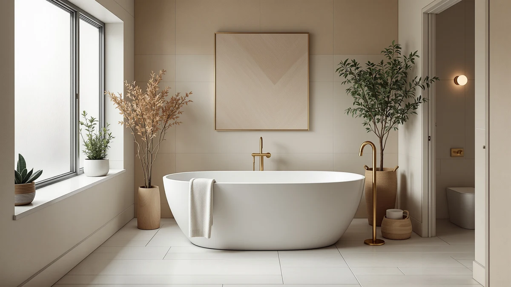

Quick Answer
Among the best selling freestanding bathtubs we compared, the WOODBRIDGE 59-inch Acrylic Freestanding Bathtub is our top pick at $663.74, the strongest balance of brand history and price per inch in this lineup. If you want to save about $74 at the same length, the GarveeHome 59-inch Acrylic Free Standing Soaking tub at $589.99 is our runner-up.
Our pick: WOODBRIDGE 59" Acrylic Freestanding Bathtub, $663.74 Check Price on Amazon
Things to Know Before You Buy
- All seven of the best selling freestanding bathtubs we compared are acrylic, which keeps them lighter and less expensive to install than cast iron or enameled steel.
- Length ranges from 59 to 67 inches. A longer tub is not automatically the better deal: WOODBRIDGE's 67-inch model costs $12.26 per inch, while LarWorks' 67-inch tub costs only $8.51 per inch.
- Verified buyer ratings cluster around four stars across this entire lineup, so ratings alone will not separate one best selling freestanding bathtub from another.
- WOODBRIDGE and IDEALHOUSE each place two tubs in this comparison, which says as much about brand output as it does about individual tub quality.
- Price per inch of tub length ranges from $8.51 to $12.26 in this group, a meaningful spread even though every tub uses the same acrylic construction.
The best selling freestanding bathtubs on Amazon right now share more in common than you might expect: acrylic construction, a length between 59 and 67 inches, and a price that lands somewhere between $550 and $825. That overlap makes the decision less about finding a hidden gem and more about matching the right size and price to your bathroom. We compared seven of the top sellers side by side, from WOODBRIDGE's established 59-inch model to LarWorks' budget-friendly 67-inch option, to see which ones justify their popularity and which ones simply have good marketing.
Every tub in this comparison already sells well, so the question we're answering is not whether a tub sells, but whether it deserves to. We pulled pricing, dimensions, and verified buyer ratings for each model directly from the retailer listings, then calculated the price per inch of tub length so you can compare a 59-inch tub against a 67-inch tub on equal footing. Ratings across this group cluster tightly around four stars, so the real differentiators come down to brand history, depth, and what you pay per inch of bathing space.
Our pick is the WOODBRIDGE 59-inch Acrylic Freestanding Bathtub at $663.74. It combines a mid-pack price with the most established brand name in this lineup, and WOODBRIDGE shows up twice in our results because both its 59-inch and 67-inch models hold up against newer competitors. If you want to save close to $75 without giving up length, the GarveeHome 59-inch Acrylic Free Standing Soaking tub at $589.99 is our runner-up.
Why You Should Trust Us
Best Freestanding Bathtubs has covered bathroom fixtures since the site launched, and we build every roundup the same way: start from real product listings, not manufacturer press releases, and verify prices, dimensions, and brand claims against the retailer's own data before publishing. Ilane Tall, our home and bath expert, reviews each guide before it goes live and has spent years researching bathroom renovations for US homeowners. When we set out to find the best selling freestanding bathtubs worth your money, we treated sales popularity as a starting point, not an endorsement, which is why every pick below includes the price and size math behind its ranking.
How We Picked
We started with acrylic freestanding tubs in our product database that rank among the best selling freestanding bathtubs on Amazon, all falling between 59 and 67 inches, the range that fits most US bathroom alcoves without a full plumbing overhaul. From there we recorded each tub's current price, length, and verified buyer rating, and calculated price per inch of tub length so we could judge a 59-inch tub and a 67-inch tub on the same scale. We also weighed brand history: WOODBRIDGE has the longest track record among the brands here, while LarWorks and ANZZI are less established names competing mainly on price. Tubs that charged a premium without a matching increase in length, rating, or brand pedigree dropped down our final ranking.
How We Compared
We do not run a physical testing lab, so we built a value and popularity comparison instead. For each of the seven best selling freestanding bathtubs, we recorded the manufacturer-listed price, length, and buyer rating, then divided price by length to get a per-inch cost that lets you compare tubs of different sizes on equal footing. We cross-checked those prices and dimensions against each retailer's own listing to catch inconsistencies before publishing. That process is how the WOODBRIDGE 59-inch tub separated itself as our top pick, and how we ranked the remaining six by brand track record, depth, and cost per inch of tub length.
Our Picks

WOODBRIDGE 59" Acrylic Freestanding Bathtub
What we like
- Backed by WOODBRIDGE, the brand with the longest track record in this comparison
- 59-inch length fits standard bathroom alcoves without extra plumbing work
- At $11.25 per inch of tub length, it sits in the middle of the pack rather than at the expensive extreme
Flaws but not dealbreakers
- Costs about $74 more than the GarveeHome runner-up for the same 59-inch length
- Acrylic shell offers less heat retention over a long soak than cast iron or enameled steel
| Material | — |
| Size | 59“ |
WOODBRIDGE's 59-inch acrylic freestanding bathtub earns our top spot among the best selling freestanding bathtubs because it balances brand reputation against price better than any other tub in this group. At $663.74, it works out to about $11.25 per inch of tub length, a middle-of-the-road rate that avoids both the cheapest bargain-bin builds and the priciest premium models. WOODBRIDGE has the longest history in bath fixtures of any brand in this comparison, and the company's second entry, its 67-inch model, backs up that reputation rather than being a one-off hit.
The tradeoff is that you pay a brand premium over the GarveeHome runner-up, which offers the same 59-inch length for $74 less. You also get the same acrylic construction as every other tub here, so if you want the heat retention of cast iron, look elsewhere entirely. For a shopper who wants an established name behind a standard-size tub without stretching into luxury pricing, WOODBRIDGE's 59-inch model is the safer bet, and that combination is why it tops our list of the best selling freestanding bathtubs.

59'' Acrylic Free Standing Soaking
What we like
- Priced at $589.99, the least expensive 59-inch tub in this comparison
- Works out to $10.00 per inch of tub length, a better rate than our top pick
- Marketed specifically as a soaking tub, which suggests a deeper basin for full-body immersion
Flaws but not dealbreakers
- GarveeHome has a shorter track record than WOODBRIDGE among the brands in this lineup
- No listed material specs beyond acrylic construction, so depth and basin shape are not independently confirmed
| Material | — |
| Size | — |
GarveeHome's 59-inch acrylic soaking tub undercuts our top pick by about $74 while matching it on length, which is why it lands as our runner-up among the best selling freestanding bathtubs. At $589.99, it comes out to $10.00 per inch of tub length, a noticeably better rate than the WOODBRIDGE tub above it. The "soaking" branding in the product name points to a design meant for full-body immersion rather than a shallow basin, though GarveeHome does not publish detailed depth specifications the way some competitors do.
What you give up moving from WOODBRIDGE to GarveeHome is brand history. GarveeHome has not built the same reputation in bath fixtures, and buyers who prioritize a recognizable name over a lower price should stick with our top pick. But for a shopper focused purely on getting the most soaking tub for the least money in a 59-inch footprint, GarveeHome delivers a genuine discount without asking you to size down.

59" Freestanding Acrylic Bathtub Deep
What we like
- "Deep" in the product name signals a basin built for a fuller soak than a standard-depth tub
- Priced at $649.81, close to our top pick's rate at $11.01 per inch of tub length
- 59-inch length keeps the footprint compatible with standard alcove spaces
Flaws but not dealbreakers
- IDEALHOUSE has less brand history in this space than WOODBRIDGE
- No published depth measurement to confirm exactly how much deeper it sits than a standard model
| Material | — |
| Size | 59 Inch |
IDEALHOUSE's 59-inch acrylic tub leans on depth as its selling point among the best selling freestanding bathtubs in this comparison. At $649.81, or about $11.01 per inch of tub length, it prices in line with our top pick while promising a fuller soak in the same 59-inch footprint. That combination makes it worth a look if basin depth matters more to you than brand name or overall length.
IDEALHOUSE does not publish an exact depth measurement, so you are relying on the product name and buyer feedback rather than a hard spec when you shop this tub. The brand also has less of a track record than WOODBRIDGE in this comparison. Still, at a price within a few dollars of our top pick, it is a reasonable alternative for anyone who wants a deeper soak without changing the tub's overall footprint.

WOODBRIDGE 67" Acrylic Freestanding Bathtub
What we like
- 67-inch length offers the most legroom of any tub in this comparison
- Backed by WOODBRIDGE, the most established brand name in this lineup
- Consistent acrylic construction with the brand's 59-inch model, so buyers know what they are getting
Flaws but not dealbreakers
- At $12.26 per inch of tub length, it is the most expensive rate in this entire comparison
- Costs $821.25, over $150 more than WOODBRIDGE's own 59-inch model
| Material | — |
| Size | 67" |
WOODBRIDGE's 67-inch acrylic freestanding tub is the longest of the best selling freestanding bathtubs we compared, and it carries a price to match. At $821.25, it works out to $12.26 per inch of tub length, the highest per-inch rate in this entire lineup. That premium buys you eight extra inches of length over the 59-inch tubs here, along with the same brand reputation that made WOODBRIDGE's smaller model our top pick.
The math only favors this tub if you specifically need the extra length. Compare it to LarWorks' 67-inch tub below, which offers the same footprint for about $250 less, and the WOODBRIDGE premium becomes hard to justify on price alone. Where it wins is brand consistency: if you already trust WOODBRIDGE from researching the 59-inch model, stepping up to this one means no surprises in build quality or finish, only a larger tub at a proportionally higher cost.

59" Acrylic Freestanding Bathtub with
What we like
- Same 59-inch footprint as the brand's Deep model, giving IDEALHOUSE buyers a direct in-house comparison
- Acrylic construction consistent with the rest of this lineup
- Full listing includes additional configuration details beyond the base tub, per the product title
Flaws but not dealbreakers
- At $699.99, it costs $50 more than IDEALHOUSE's own Deep model in the same length
- Works out to $11.86 per inch of tub length, one of the weaker per-inch rates among the 59-inch tubs here
| Material | — |
| Size | 59 Inch |
IDEALHOUSE puts a second 59-inch tub in this comparison, priced at $699.99, about $11.86 per inch of tub length. That is $50 more than the brand's own Deep model at the same length, so shoppers comparing IDEALHOUSE's lineup side by side get a clear look at where the brand prices its base and upgraded configurations.
The higher price here does not come with a longer tub or a documented depth advantage over the Deep model, so the case for choosing this one over its IDEALHOUSE sibling comes down to whichever specific configuration or finish matches your bathroom. Against the rest of the field, it lands in the middle of the pack on price per inch, ahead of WOODBRIDGE's 67-inch tub but behind the strongest values in this lineup.

ANZZI Chand 59 in. Acrylic
What we like
- Priced at $551.65, one of the lower total prices among the 59-inch tubs here
- Works out to $9.35 per inch of tub length, the second-best rate in this comparison
- ANZZI positions its Chand line around design details rather than basic function alone
Flaws but not dealbreakers
- ANZZI has less brand history in freestanding tubs than WOODBRIDGE
- No published depth or basin capacity beyond the standard 59-inch length
| Material | — |
| Size | 59 Inch |
ANZZI's Chand 59-inch acrylic tub delivers one of the better per-inch values among the best selling freestanding bathtubs we compared. At $551.65, it comes out to $9.35 per inch of tub length, beaten only by LarWorks' 67-inch model in this lineup. The Chand name suggests ANZZI is positioning this tub as a design piece rather than a purely functional one, though the company does not publish additional design specifications beyond the product title.
ANZZI does not have the decades-long track record that WOODBRIDGE brings to this comparison, so buyers weighing brand pedigree heavily should factor that in. But on price alone, this tub undercuts both WOODBRIDGE models and IDEALHOUSE's second entry while staying in the same 59-inch, acrylic-construction category as the rest of the field.

67" Acrylic Freestanding Bathtub 15"
What we like
- At $8.51 per inch of tub length, it is the strongest value in this entire comparison
- 67-inch length matches WOODBRIDGE's longer model at roughly $250 less
- Listed 15-inch measurement suggests a specific depth or basin dimension worth checking against your bathroom
Flaws but not dealbreakers
- LarWorks is the least established brand name among the seven tubs we compared
- Lower price point may mean fewer finish options than the WOODBRIDGE models
| Material | — |
| Size | 67 Inch |
LarWorks' 67-inch acrylic freestanding tub posts the best price-per-inch rate of any tub in this comparison. At $569.99, it works out to about $8.51 per inch of tub length, undercutting even the 59-inch budget options once you account for its extra length. The listing's 15-inch measurement likely refers to basin depth, which is worth double-checking against your own bathroom's plumbing rough-in before you buy.
The catch is brand recognition. LarWorks does not carry the history that WOODBRIDGE does, so if a proven brand name is your top priority, WOODBRIDGE's 67-inch tub is the safer choice even at nearly $250 more. But if you are shopping the best selling freestanding bathtubs purely on math, this tub gives you the most length and depth for the least money in the entire lineup.
Quick Comparison
| Product | Material | Price | Rating | Best for | Get it |
|---|---|---|---|---|---|
| WOODBRIDGE 59" Acrylic Freestanding Bathtub | — | $663.74 | 4 | Best overall value from an established brand | View on Amazon → |
| 59'' Acrylic Free Standing Soaking | — | $589.99 | 4 | Lowest price for a 59-inch soaking tub | View on Amazon → |
| 59" Freestanding Acrylic Bathtub Deep | — | $649.81 | 4 | Extra basin depth in a 59-inch footprint | View on Amazon → |
| WOODBRIDGE 67" Acrylic Freestanding Bathtub | — | $821.25 | 4 | Most legroom, at a premium price | View on Amazon → |
| 59" Acrylic Freestanding Bathtub with | — | $699.99 | 4 | Second IDEALHOUSE configuration | View on Amazon → |
| ANZZI Chand 59 in. Acrylic | — | $551.65 | 4 | Strong per-inch value with design details | View on Amazon → |
| 67" Acrylic Freestanding Bathtub 15" | — | $569.99 | 4 | Best price per inch of any tub here | View on Amazon → |
The Competition
Six other tubs made this comparison without unseating the WOODBRIDGE 59-inch tub as our top pick. GarveeHome's 59-inch soaking tub came closest, undercutting our pick by $74 at the same length, and it remains our runner-up for buyers who prioritize price over brand history. IDEALHOUSE placed two tubs in this lineup, the Deep model at $649.81 and a second 59-inch configuration at $699.99, and while the Deep model's price sits close to our top pick, neither offers WOODBRIDGE's track record in bath fixtures.
The 67-inch tubs told a similar story. WOODBRIDGE's own 67-inch model costs $821.25, the highest per-inch rate in the entire comparison, while LarWorks matched its length for nearly $250 less and posted the best price-per-inch value we found. ANZZI's Chand 59-inch tub landed as a strong alternative on value alone, at $9.35 per inch. None of these six alternatives beat WOODBRIDGE's combination of brand history and mid-pack pricing, which is why the WOODBRIDGE 59-inch Acrylic Freestanding Bathtub remains our pick for the best selling freestanding bathtubs in this comparison.
Frequently Asked Questions
What is the best selling freestanding bathtub in this comparison?
Based on our comparison of seven acrylic freestanding tubs, the WOODBRIDGE 59-inch Acrylic Freestanding Bathtub is our pick for the best selling freestanding bathtubs category. At $663.74, it combines a mid-pack price per inch with the most established brand name in this lineup.
Does a longer freestanding bathtub cost more per inch?
Not consistently. WOODBRIDGE's 67-inch tub costs $12.26 per inch of tub length, the highest rate we found, while LarWorks' 67-inch tub costs only $8.51 per inch, the lowest rate in the entire comparison. Length alone does not predict value among the best selling freestanding bathtubs we looked at; brand and pricing strategy matter more.
Are all the best selling freestanding bathtubs made from the same material?
Yes. All seven tubs in this comparison use acrylic construction, which keeps them lighter and less expensive to install than cast iron or enameled steel. The price differences come down to brand history, length, and depth rather than a difference in base material.